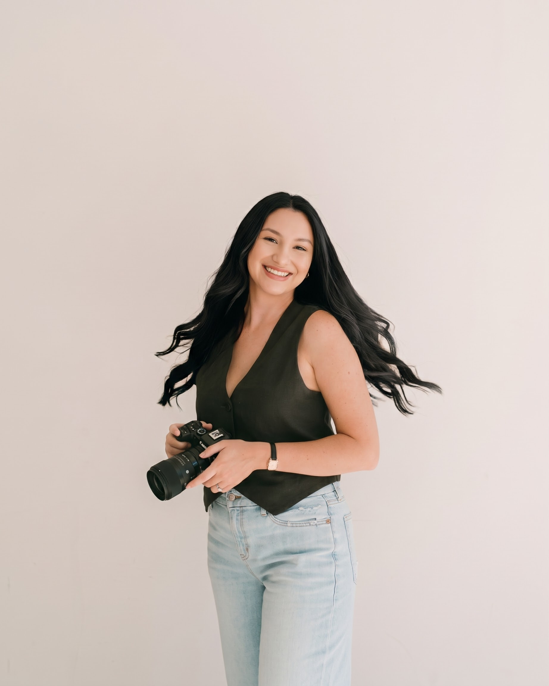

Branding Visual / Fotografía / Eventos
Gisella Villarreal
Ideas que construyen marcas personales auténticas y capturan eventos con estética, sensibilidad y propósito.
Branding Visual / Fotografía / Eventos
Ideas que construyen marcas personales auténticas y capturan eventos con estética, sensibilidad y propósito.
Mis servicios
Construcción Estratégica y presencia digital de marca, dirección de arte y narrativa visual para destacar en redes sociales, optimización de Instagram, web one-pages/BioLink.
Transformamos tus ideas en fotografías y videos cortos mediante producción presencial y dirección creativa. Producción de fotografías y Reels.
Identidad visual, monogramas, papelería, pág web del evento.
Nos conocemos: conversamos sobre tu proyecto, tus ideas, necesidades y expectativas.
Descubrimos la esencia: exploramos el concepto, la personalidad y aquello que queremos comunicar.
Damos forma a las ideas: desarrollamos la propuesta estratégica y visual de acuerdo con el servicio contratado.
Hacemos realidad el proyecto: entregamos las piezas y recursos acordados para dar vida a la identidad.



Testimonios • Clientes GV

Hace un poco más de 5 años de experiencia en marketing digital, trabajando en desarrollo de marcas, comercio electrónico y comunicación digital.
Soy Gestora de Marketing, con formación en dirección de arte y fotografía para marcas personales en redes sociales.
Creo que construir una marca va más allá de crear una imagen bonita: se trata de comprender su esencia, reconocer lo que la hace diferente y encontrar la mejor manera de comunicarlo.
Acompaño a marcas que buscan una presencia auténtica y a personas que desean dar identidad a sus celebraciones y eventos. Cada proyecto combina escucha, estrategia y creatividad, cuidando cada detalle para reflejar lo que lo hace especial.
Me encantará conocer tu proyecto y descubrir juntas todo lo que podemos crear.